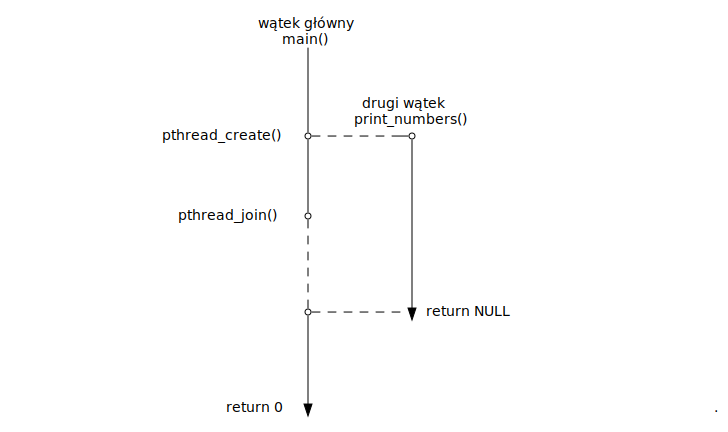
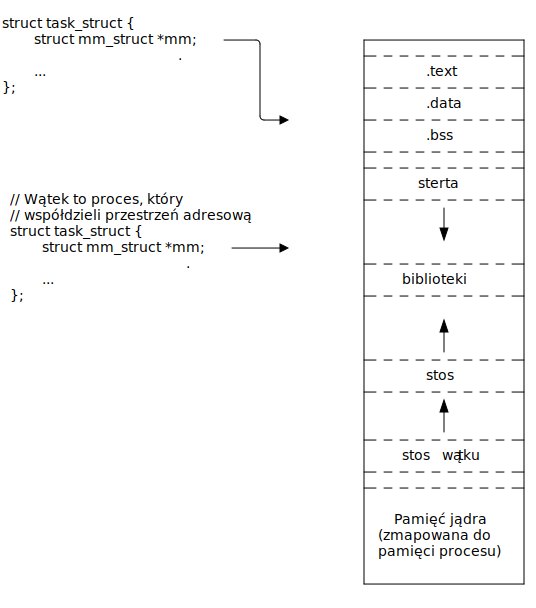

Funkcje w języku C, to takie “podprogramy”, które realizują pewną funkcjonalność.
Definicja funkcji:
float add(float a, float b)
{
float result = a + b;
return result;
}Wywołanie funkcji:
float res = add(1.0f, 2.0f);
printf("%f", res);
/* Oczywiście nic nie stoi na przeszkodzie, żeby zignorować
wartość zwracaną */
add(3.0f, 11.0f);Jeżeli jako typ zwracany użyjemy void, to oznacza to, że funkcja nie zwraca żadnej wartości.
void introduce(int age)
{
if (age < 0)
return;
printf("Hi! I am %d years old\n", age);
}Wywołanie:
introduce(30);Wskaźnik to zmienna, która może zawierać adres do innej zmiennej. Przykład:
int age = 20; /* zmienna */
int *age_pointer = &age; /* wskaźnik pokazujący do zmiennej */Za pomocą takiego wskaźnika możemy następnie modyfikować oraz odczytywać wartość zmiennej:
int age = 20; /* zmienna */
int *age_pointer = &age; /* wskaźnik pokazujący do zmiennej */
*age_pointer = 80;
printf("%d", age);
printf("%d", *age_pointer);
age = 15;
printf("%d", age);
printf("%d", *age_pointer);Ustawiając wskaźnik na wartość NULL, sprawiamy, że będzie on przechowywał adres zerowy
int *x = NULL;
int *y;
y = NULL;
/* Dereferencja takich wskaźników najprawdopodobniej skończy się naruszeniem
ochrony pamięci (Segmentation fault) */
int liczba = *x; /* Problem */void *Pomimo tego, że rozmiary zmiennych wskaźnikowych są zawsze takie same, nie powinno się mieszać typów:
int x = 1;
float *y = &x; /* Ostrzeżenie przy kompilacji */
printf("%f", *y); /* Niezdefiniowane zachowanie (ang. Undefined behavior) */Wskaźnik void *, jest wyjątkiem. Może on przechowywać adres do zmiennej dowolnego typu.
int x = 1;
float y = 1.0f;
int *z = &x;
void *ptr = &x; /* Można mu przypisać dowolny adres */
ptr = z; /* Można mu przypisać dowolny wskaźnik */
ptr = &y;
float *py = ptr; /* Można go przypisywać do wskaźnika innego typu */Nie można wykonać dereferencji na wskaźniku void. Czyli *ptr, nie działa. Trzeba go przypisać do konkretnego typu i dopiero potem wykonać dereferencje.
Przykład - funkcja która zwiększa wartość zmiennej o 1:
void increment(int *x) void increment(int x)
{ {
*x = *x + 1; x = x + 1;
} }Wywołanie:
int x = 17; int x = 17;
increment(&x); increment(x);
increment(&x); increment(x);
increment(&x); increment(x);
printf("%d\n", x); printf("%d\n", x);Jaka jest różnica?
Możemy stworzyć zmienną, która będzie przechowywać adres funkcji:
int add(int x, int y)
{
return x + y;
}
int main(void)
{
/* Tworzymy wskaźnik na funkcję o nazwie 'operation' i przypisujemy
my adres funkcji add. Nie musimy stosować & */
int (*operation)(int a, int b) = add;
int result = operation(1, 2);
printf("%d\n", result);
}Wskaźniki na funkcję umożliwiają tworzenie bardziej generyczniego kodu.
int add(int x, int y) { return x + y; }
int sub(int x, int y) { return x - y; }
int main(void)
{
int a, b;
char op;
if (scanf("%d %c %d", &a, &op, &b) != 3)
return 1;
int (*operation)(int a0, int a1) = NULL;
if (op == '+')
operation = add;
else if (op == '-')
operation = sub;
else
return 1;
printf("%d\n", operation(1, 2));
return 0;
}void print_rows(int x, bool last)
{
printf("%d\n", x);
}
void print_commas(int x, bool last)
{
printf(last ? "%d\n" : "%d, ", x);
}
void range(int start, int end, void (*fn)(int x, bool last))
{
for (int i = start; i < end; ++i)
fn(i, i == end - 1);
}
int main(void)
{
range(1, 10, print_rows);
range(1, 10, print_commas);
return 0;
}Wątki POSIX (ang. POSIX threads) to zestaw funkcji służących między innymi do
Po co nam wątki?
Program który używa biblioteki POSIX threads, należy zlinkować z biblioteką libpthread.so. Można to osiągnąć używając przełącznika -l do kompilatora gcc.
$ gcc -lpthread twojprogram.cW celu utworzenia nowego wątku, należy najpierw napisać funkcję, która będzie wykonywana przez wątek. Jej sygnatura musi być następująca:
void *thread_function(void *arg);Przykład - funkcja wątku, która wypisuje liczby od 1 do 10:
void *print_numbers(void *arg)
{
for (unsigned int i = 0; i < 10; ++i)
printf("%d\n");
return NULL;
}Nowy wątek można utworzyć za pomocą funkcji pthread_create(). Jako argument należy jej przekazać funkcję wątku.
#include <pthread.h>
int pthread_create(pthread_t *thread, const pthread_attr_t *attr,
void *(*start_routine)(void *), void *arg);Przykład - utworzenie nowego wątku, który będzie wykonywał funkcję print_numbers():
pthread_t thread;
int err = pthread_create(&thread, NULL, print_numbers, NULL);
if (err)
return 1;Po utworzeniu nowego wątku, rozpocznie się jego wykonywanie. Przed zakończeniem programu powinniśmy poczekać na zakończenie wątku za pomocą funkcji pthread_join().
#include <pthread.h>
int pthread_join(pthread_t thread, void **value_ptr);err = pthread_join(thread, NULL);
if (err)
return 1;Funkcja pthread_join() blokuje wątek, w którym została wywołana do momentu zakończenia wątku na który oczekujemy.
#include <pthread.h>
void *print_numbers(void *arg)
{
for (unsigned int i = 0; i < 10; ++i)
printf("%d\n");
return NULL;
}
int main(void)
{
pthread_t thread;
int err = pthread_create(&thread, NULL, print_numbers, NULL);
if (err)
return 1;
/* W tym momencie w "tle" wykonywana jest funkcja 'print_numbers' */
err = pthread_join(thread, NULL);
if (err)
return 1;
return 0;
}Wątki wykonują się równolegle. Rysunek przedstawia przebieg wykonywania się wątków w czasie:

Wątki wspóldzielą przestrzeń adresową
x = 0
...
// wątek 1 // wątek 2
x += 1;
x += 1;
printf("%d\n", x); // 2
printf("%d\n", x); // 2Procesy współdzielą przestrzeń adresową do pierwszego zapisu
x = 0;
...
// proces 1 // proces 2
x += 1; // Copy-on-write
x += 1;
printf("%d\n", x); // 1
printf("%d\n", x); // 1
Funkcja wątku przyjmuje jako pierwszy argument wskaźnik, przez który można jej przekazać dowolną wartość.
void *print_numbers(void *arg)
{
int *start = arg;
/* Wypisanie liczb od *start do *start + 10 */
for (unsigned int i = *start; i < *start + 10; ++i)
printf("%d\n");
return NULL;
}Wskaźnik do argumentu należy przekazać jako argument do funkcji pthread_create().
int first_number = 1000;
int err = pthread_create(&threads[i], NULL, print_numbers, &first_number);
if (err) {
/* Obsługa błędu */
}Możemy utworzyć wiele wątków wywołując kilka razy funkcję pthread_create(). Dla przykładu stwórzmy program który będzie sumował liczby w tablicy, wykorzystując 4 wątki.
/* Zmienna globalna zawierająca liczby do zsumowania */
int data[16] = { 0, 2, 4, 5, 0, 1, 4, 9, 0, 2, 1, 5, 0, 3, 4, 1 };
/* Zmienna globalna zwiarająca wyniki sumowania dla każdego wątku */
int result[4];
void *sum(void *arg)
{
int *thread_nr = *arg;
int offset = *thread_nr * 4;
for (int i = offset; i < offset + 4; ++i)
result[*thread_nr] += data[i];
return NULL;
}int main(void)
{
pthread_t threads[4];
int thread_numbers[4] = {0, 1, 2, 3}
for (int i = 0; i < 4; ++i) {
int error = pthread_create(&threads[i], NULL, sum, &thread_numbers[i]);
if (error)
return 1;
}
/* W tym momencie wątki sumują liczby */
for (int i = 0; i < 4; ++i) {
int err = pthread_join(threads[i], NULL);
if (err)
printf("join failed\n");
}
printf("%d", result[0] + result[1] + result[2] + result[3]);
}Sekcja krytyczna to fragment kodu, który korzysta z zasobu współdzielonego przez inny wątek lub wątki.
int values[32];
int num_values;
void *thread_1(void *arg)
{
for (int i = 0; i < 16; ++i) {
/* Sekcja krytyczna */
values[num_values] = i;
num_values++;
}
return NULL;
}
void *thread_2(void *arg)
{
for (int i = 0; i < 16; ++i) {
/* Sekcja krytyczna */
values[num_values++] = -i;
}
return NULL;
}int values[32];
int num_values;
void *thread_fn(void *arg)
{
for (int i = 0; i < 16; ++i) {
/* Sekcja krytyczna */
values[num_values] = i;
num_values++;
}
return NULL;
}
int main(void)
{
pthread_t thread1, thread2;
int err = pthread_create(&thread1, NULL, &thread, NULL);
if (err)
return 1;
err = pthread_create(&thread2, NULL, &thread, NULL);
if (err)
return 1;
}W danym momencie do współdzielonego zasobu powinien mieć dostęp tylko jeden wątek. Oznacza to, że jeżeli jeden wątek korzysta ze współdzielonego zasobu, to drugi powinien zaczekać, aż ten pierwszy skończy.
Do takiej synchronizacji wykorzystywane są mutexy (od ang. Mutual Exclusion).
Mutexy są reprezentowane przez typ pthread_mutex_t.
#include <pthread.h>
typedef /*implementation-defined*/ pthread_mutex_t;Mutex może zostać zainicjalizowany za pomocą stałej PTHREAD_MUTEX_INITIALIZER.
pthread_mutex_t lock = PTHREAD_MUTEX_INITIALIZER;Lub za pomocą funkcji pthread_mutex_init(). W takim przypadku należy go zdeinicjalizować gdy nie jest już używany za pomocą pthread_mutex_destroy().
#include <pthread.h>
/* Inicjalizacja */
int pthread_mutex_init(pthread_mutex_t *mutex, const pthread_mutexattr_t *attr);
/* Deinicjalizacja */
int pthread_mutex_destroy(pthread_mutex_t *mutex);#include <pthread.h>
pthread_mutex_t lock = PTHREAD_MUTEX_INITIALIZER
int main(void)
{
pthread_mutex_t another_lock;
/* Inicjalizacja mutexu */
int ret = pthread_mutex_init(&another_lock, NULL);
if (ret)
return 1;
...
/* Deinicjalizacja mutexu */
pthread_mutex_destroy(&another_lock, NULL);
return 0;
}Do blokowania mutexów służą funkcje pthread_mutex_lock() i pthread_mutex_unlock().
#include <pthread.h>
/* Blokowanie mutexu */
int pthread_mutex_lock(pthread_mutex_t *mutex);
/* Odblokowanie mutexu */
int pthread_mutex_unlock(pthread_mutex_t *mutex);--> pthread_mutex_lock(&lock); --> pthread_mutex_lock(&lock);
values[num_values] = i; values[num_values] = i;
num_values++; num_values++;
pthread_mutex_unlock(&lock); pthread_mutex_unlock(&lock); pthread_mutex_lock(&lock); --> pthread_mutex_lock(&lock);
--> values[num_values] = i; values[num_values] = i;
num_values++; num_values++;
pthread_mutex_unlock(&lock); pthread_mutex_unlock(&lock); pthread_mutex_lock(&lock); --> pthread_mutex_lock(&lock);
values[num_values] = i; values[num_values] = i;
num_values++; num_values++;
--> pthread_mutex_unlock(&lock); pthread_mutex_unlock(&lock); pthread_mutex_lock(&lock); pthread_mutex_lock(&lock);
values[num_values] = i; --> values[num_values] = i;
num_values++; num_values++;
pthread_mutex_unlock(&lock); pthread_mutex_unlock(&lock);int values[32];
int num_values;
pthread_mutex_t lock;
void *thread_1(void *arg)
{
for (int i = 0; i < 16; ++i) {
pthread_mutex_lock(&lock);
values[num_values] = i;
num_values++;
pthread_mutex_unlock(&lock);
}
return NULL;
}
void *thread_2(void *arg)
{
for (int i = 0; i < 16; ++i) {
pthread_mutex_lock(&lock);
values[num_values++] = -i;
pthread_mutex_unlock(&lock);
}
return NULL;
}int values[32];
int num_values;
pthread_mutex_t lock;
void *thread_fn(void *arg)
{
for (int i = 0; i < 16; ++i) {
/* Sekcja krytyczna */
pthread_mutex_lock(&lock);
values[num_values] = i;
num_values++;
pthread_mutex_unlock(&lock);
}
return NULL;
}
int main(void)
{
pthread_t thread1, thread2;
int err = pthread_create(&thread1, NULL, &thread, NULL);
...
err = pthread_create(&thread2, NULL, &thread, NULL);
...
}Jednym z przypadków kiedy może wystąpić deadlock jest gdy jeden z wątków nie zwolni mutexu.
pthread_mutex_t lock;
void *thread_1(void *arg)
{
for (int i = 0; i < 16; ++i) {
pthread_mutex_lock(&lock);
values[num_values++] = i;
pthread_mutex_unlock(&lock);
}
return NULL;
}
void *thread_2(void *arg)
{
for (int i = 0; i < 16; ++i) {
pthread_mutex_lock(&lock);
values[num_values++] = -i;
if (i == 5)
break;
pthread_mutex_unlock(&lock);
}
return NULL;
}pthread_mutex_t lock_a, lock_b;
void *thread_1(void *arg)
{
pthread_mutex_lock(&lock_a);
...
pthread_mutex_lock(&lock_b); /* Nie możemy wejść bo thread_2 trzyma lock_b */
...
pthread_mutex_unlock(&lock_b);
...
pthread_mutex_unlock(&lock_a);
return NULL;
}
void *thread_2(void *arg)
{
pthread_mutex_lock(&lock_b);
...
pthread_mutex_lock(&lock_a); /* Nie możemy wejść bo thread_1 trzyma lock_a */
...
pthread_mutex_unlock(&lock_a);
...
pthread_mutex_unlock(&lock_b);
return NULL;
}